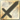

Tema 2
PDF de "Ejercicios 1" completo
Hablar con Byleth
Adivina un número con Byleth
Byleth te saca la lotería
Manejo de errores con Byleth parte 1
Manejo de errores con Byleth parte 2
Tema 3
Operación aritmética
Cuenta con Byleth
Comprobación de parámetros
Termina el código
Diferencias de bucles con Byleth
Byleth te lanza una moneda
Juega al triángulo de armas con Byleth
Byleth calcula el factorial
Intercambio de valores
Suma por comas
Parámetros por defecto
Factorial recursivo
Tema 4
Juega al ahorcado con Byleth
Byleth te cobra el parking
Visualizar un vector
Byleth valida tu e-mail
Tema 5
Formulario 1
Formulario 2
Tema 6
Lista de varios niveles
Pulsar el botón
Burbujeo de sucesos
Tema 7
Abrir ventanas
Marcos
Cuadros
Tema 8
Colores RGB
Roll Over
Contador de visitas
Tema 9
Carrito
Array de objetos
Creación de objetos
Tema 10
Posicionamiento
Colecciones
Filtros transiciones
Tema 11
Byleth te hace una pizza
Art by @NinNakajima
Creación de objetos
Listing 8-1
Listing 8-2
Listing 8-3